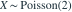
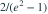
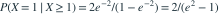

。求 。- A

- B
- C

- D

我已思考，展开答案与解析
正确答案：D

。
易错提醒条件排除了零值，应重新归一化。
数学三·概率统计基础专题 · 数学三概率统计基础专题·原创第12题
按数学三常见概率统计知识点原创；不是历年真题或教材原题。

。求 。

。数学三·概率统计基础专题 · 数学三概率统计基础专题·原创第12题
按数学三常见概率统计知识点原创；不是历年真题或教材原题。